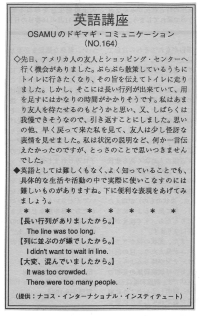

長い行列がありました。
The line was too long. / I didn't want to wait in line. Osamu went to the bathroom but there were too many people. He didn't want to wait in line so he didn't use the restroom. When he came back, he didn't know what to tell his friend.
先日、アメリカの友人とショッピング・センターへ行く機会がありました。ぶらぶら散策しているうちにトイレに行きたくなり、その旨を伝えてトイレに走りました。しかし、そこには長い行列が出来ていて、用を足すにはかなりの時間がかかりそうです。私はあまり友人を待たせるのもどうかと思い、又、しばらくは我慢できそうなので、引き返すことにしました。思いの他、早く戻って来た私を見て、友人は少し怪訝な表情を見せました。私は状況の説明など、何か一言伝えたかったのですが、とっさのことで思いつきませんでした。
英語としては難しくもない、よく知っていることでも、具体的な生活や活動の中で実際に使いこなすのには難しいものがありますね。下に便利な表現をあげてみましょう。
長い行列がありましたから。
The line was too long.
列に並ぶのが嫌でしたから。
I didn´t want to wait in line.
大変、混んでいましたから。
It was too crowded.
There were too many people.

| © 1995-2013 NACOS International Institute. All Rights Reserved. |